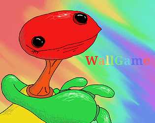

itch.io • Newgrounds • Github
A simple arcade game with three gamemodes about dodging walls to rack up your score. It's designed to be hectic, somewhat gameplay-wise but mainly for the player's senses. Made originally in Java but ported to Javascript for its release, with integration with Newgrounds.io (the Newgrounds API) to allow for score-saving and medals.